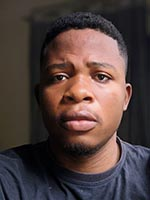
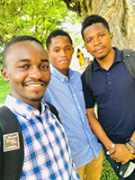
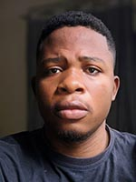
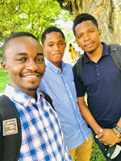
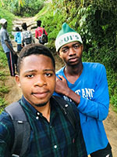
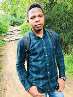
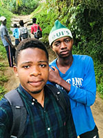
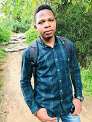

OBED KABONGO
futur ingenieur, analyste programmeur et webmaster
Obed Kabongo Kalenga, né le 11 novembre 1998 à Kinshasa (république démocratique du Congo),
est un jeune universitaire, informaticien et passionné pour l’électronique...
Fort de sa personne, conscient et averti du danger écologique,
il encadre un petit groupe de jeunes sous le label d’A.J. R, une petite association pour lutter contre l’insalubrité dans son quartier.
Dès le bas âge, il a une passion, celle d’être un innovateur et un grand ingénieur.
A 12 ans, il excelle dans le bricolage des petits appareils électronique, son mode opératoire :
démonter un appareil puis essayer de le reconstituer.
Ce n’était pas facile au départ, car pour ça, il a eu une renommée de destructeur.
 




 




Obed Kabongo Kalenga, est né le 11 novembre 1998 à Kinshasa en RDC, de Mamy Kitiata Mambiki et de Charles Kabongo Lubuika. Obed a quatre frères, Christian, Chadrack, Glodel, Kevin et une sœur, Stéphanie Kabongo. Il est Passionné par tout ce qui a trait à l’électronique et au développement technologique. Dans ses temps libres, il se consacre à la lecture, aux jeux de société et à quelques jeux vidéo.
A 17 ans, il commence à travailler comme sous-traité de la société de gardiennage Securico Sarl dans un grand hôpital (C.H Monkole), comme agent de sécurité.
Après une période d’introspection, il se décide de faire l’université et commence d’abord dans la faculté polytechnique, puis dans la faculté des sciences à l’université de Kinshasa.
Son éducation au collège commence avec un certificat d’études primaire à l’école Cardinal Malula, puis un diplôme d’état en chimie-biologie dans la même école.
Actuellement (2021) il poursuit sa formation dans le domaine d’informatique dans la faculté des sciences et technologie de l’université de Kinshasa.
Mon contact
Email: obedkabongo21@gmail.com
telephone : (243) 82 023 22 31 - 97 177 67 15
Adresse: 96 bis herady, selembao-kinshasa, rép dem du Congo
Bref parcours professionnel
SCTP
agent journalier/ matadi aout 2015
J’ai travaillé comme agent journalier a la sctp/Matadi au port. Une expérience inoubliable c’était mon premier emploi et par conséquent mon premier salaire.
Securico Sarl
agent de securite/ 13 aout 2016 - 21 aout 2019
Voilà qu’ici non seulement j’étais devenu salarié mais en plus de cela, a 17 ans seulement je venais de signer un contrat de travail.